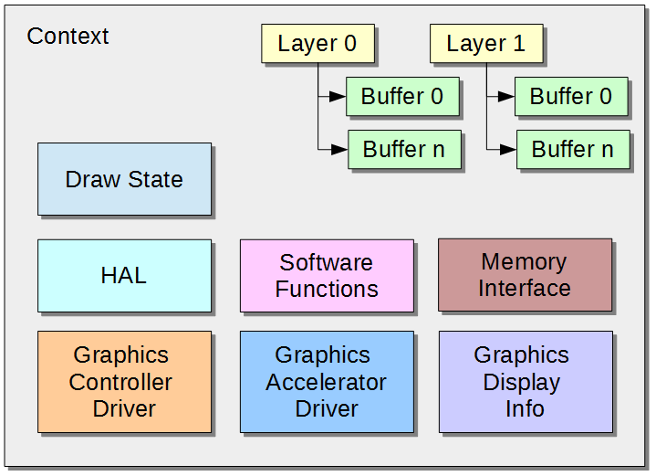

The HAL serves to abstract the details of the hardware away from the application and protect the graphics state from mismanagement. This layer is designed to be similar to industry-standard graphics APIs, such as OpenGL from SGI, and DirectX from Microsoft. Applications that use graphics should only communicate with this layer at a minimum, and should not attempt to communicate with display drivers directly.
Before looking at the operation and structure of the HAL, the following definitions of the different keywords and concepts explained within the HAL are provided.
Hardware Abstraction Layer Definitions:
- Alpha blending: An operation that combines two colors into a single color, based on one or more percentage values
- Blit: Writing an area of pixel data to a buffer
- Buffer swap: Cycling through a buffer chain, therefore changing the read and write buffer pointers
- Cache coherent: Data that must always be current in memory, such as data that is accessed by a peripheral, which should use coherent memory
- Clipping: Comparing a point to a rectangle, or a rectangle to a rectangle, to assess whether the point is contained inside the rectangle or conforming the area of one rectangle to fit inside another
- Color masking: An operation that compares a color value with a color mask value. If the values are equal, the color is ignored and not rendered to the write buffer.
- Color mode: Defines how pixel data is stored in memory. Some color modes consume less memory than others.
- Context: An instance of the hardware abstraction layer. Combines a display, a driver, and possibly a graphics accelerator.
- Display: A display device capable of rendering color data
- Draw Target: An application-defined area of memory to be used as the target for draw operations. This is often different than the active frame buffer and can be used for off-screen rendering operations.
- Driver: A software program that communicates directly with, and manages, hardware
- Double buffer: A display configuration in which multiple frame buffers are chained together to avoid screen tearing artifacts
- Frame buffer: An area of memory that contains pixel data. Pixel data is one of several color modes with each mode consuming various quantities of memory.
- Heap: A pool of memory that can be dynamically allocated
- HSync: A refresh state of a display device when the device is being refreshed outside the horizontal viewing area
- Layer: A rectangular area of space that contains one or more frame buffers. Can directly correspond to a hardware-managed layer.
- Pixel: A single color value stored in a predefined mode. Usually 8 to 32 bits in size.
- Pixel buffer: A struct that describes a rectangle of pixel data. May or may not actually contain valid pixel data.
- Point: A two dimensional Cartesian coordinate consisting of a horizontal “x” value and a vertical “y” value
- Raster operation: Any operation or algorithm that writes pixel data to the write buffer
- Read buffer: A buffer that is currently being used to feed display data to display hardware
- Size: A two dimensional measurement of magnitude consisting of a “width” and a “height” value
- VSync: A refresh state of a display device when the device is being refreshed outside the vertical viewing area
- Write buffer: A buffer that is designated as the receiver of raster operations
HAL Features
What does the Hardware Abstraction Layer do?
The HAL serves four main purposes:
- Configure abstract graphics and display hardware
- Managing frame buffer memory
- Manage draw state
- Draw shapes
Graphics and Display Hardware Configuration
The HAL serves as an intermediary between the higher level stack layers and the hardware drivers. Drivers are expected to conform to the HAL specification and applications interface with drivers through a simple set of APIs. The main purpose of this is to allow the framework to use various hardware drivers without ever having to make changes to the application. Each driver will interface with the HAL according to its specific needs and capabilities.
Frame Buffer Memory Management
Memory management is handled by the HAL for all drivers, libraries, and applications. This may include; buffer creation, buffer resizing, freeing buffer memory, buffer swapping, etc. The application simply requests buffer functions through the HAL APIs. Drivers may restrict how buffers are managed based on specific graphics controller needs and capabilities.
Draw State Management
The HAL maintains a state that indicates how raster operations should be performed.
Shape Drawing
The HAL provides APIs for basic pixel, line, circle, and rectangle drawing. These are rendered according to the draw state.
HAL Context
What is a context?
The HAL is designed to be multi-instance, which means it supports multiple drivers and displays concurrently. This is accomplished by using a context or layer state. A context is essentially the combination of a single display descriptor, and a single graphics driver. Graphics processors may also be part of a context. The HAL allows only a single context to be active or in use at any one time, but the application may switch contexts at any time in order to act on another state.
 Note: Note: |
Graphics drivers must also be able to support multi-instancing in order for the application to use multiple contexts. |
The following block diagram shows a high-level representation of what the context contains. A description of each block follows the diagram.

Graphics Display Info
The application uses a “Display” definition to obtain knowledge about the displays that are available through the HAL. This definition contains information such as:
- Name: A short identifier for the display
- Color Modes: The color modes the display supports
- Size: A width and height
- Timing settings: Values for the front porches, back porches, pulse widths, etc.
Display definitions are generated through the use of HConfig and Freemarker templates. These definitions are created during the code generation phase of MHC and are expected to exist at run-time.
Graphics Controller Driver
The application uses a “Driver” definition to obtain information from the HAL about the available drivers in the system.
The driver definition consists of the following information:
- Name: A short identifier for the controller
- Color Modes: The color modes the controller supports
- Layer Count: The number of hardware layers the controller supports
Driver integration with the HAL will be covered in a subsequent section.
Graphics Accelerator Driver
A Graphics Processing Unit (GPU) may be present in the system. If one exists, the context must reroute GPU supported raster operations to the graphics accelerator driver for handling.
Layer
A HAL layer is a representation of a hardware based display layer most likely provided by a graphics controller. Applications are capable of using one or more of these layers up to the max value indicated by a hardware driver. Layers have a width, height, and a position in absolute space on the display.
Layers may have one or more frame buffers associated with them. Layers with two buffers are often called double buffered. Multiple buffers of a layer are connected to form a buffer chain, and are cycled through as needed via pointer swapping. Layers have, at all times, one buffer considered to be the read buffer and one buffer considered to be the write buffer. In a single buffer layer, the read and write buffers are the same. When drawing single buffer layers, rendering artifacts such as screen tearing may be observed. This is because a single buffer may be written to, and read from at the same time. Double buffering alleviates screen tearing as all raster operations are performed on the hidden write buffer and the buffers are only swapped once the write buffer has been fully crafted. Further, by acting during display blanking periods, the driver can swap the read and write buffer pointers during periods when the display is not actively drawing. This should completely eliminate screen tearing.
A context has one active layer at all times and all operations are performed on the active layer.
Frame Buffer
An extension of a pixel buffer, frame buffers are used by layers to track frame buffer states. Frame buffers contain a pixel buffer, but also contain the following:
- Pixel Buffer State: An indication of the origin of the data for the pixel buffer. This can indicate that the buffer contains no pixel data, that the pixel data was allocated from the heap, or that the buffer and associated pixel data is owned and managed by the graphics driver. The latter state is used to prevent the application from freeing buffers managed by the graphic driver.
- Coherent: An indication that the buffer should be allocated from cache coherent memory when it is dynamically allocated
Memory Interface
By default, the HAL uses standard library memory management functions, such as malloc, free, calloc, etc. However, in the presence of memory peripherals, the application may want the Graphics Stack to utilize a custom memory manager instead. This is accomplished by providing a memory interface definition.
This definition simply provides alternate function pointers for standard memory allocation functions.
Draw State
The context's draw state is simply a list of hints that the context feeds into raster operation functions such as a line draw. The state indicates what the draw color is, if alpha blending is enabled, if the final raster point should be adjusted for orientation or mirroring, if there is a masking or transparency color enabled, etc.
HAL
One of the most important functions of the context is to provide hardware abstraction. By default, all raster operations are handled in software, or in the Software Functions module. However, if a GPU exists, any supported raster operation requests must be rerouted to the GPU driver for handling. In other cases, the driver may need to restrict context options or handle an operation in a manner that is different from the default implementation. Therefore, the driver may change the function routing in the context's HAL state as it sees fit. However, if the driver implements non-default functionality, it must ensure that overall functionality of the context is not compromised.
Software Functions
The HAL contains a series of default implementation functions for most operations. These are represented by the Software Functions module.
Color Support
The HAL is able to create and manage a context using one of several color formats.
- GS8: 8-bit gray scale
- RGB_332: 8-bit, 256 colors
- RGB_565: 16-bit, 65536 colors
- RGB_5551: 15-bit color, 1-bit alpha, 32767 colors
- RGB_888: 24-bit color, 16 million colors
- RGBA_8888: 24-bit color, 8-bit alpha, 16 million colors
- ARGB_8888: 24-bit color 8-bit alpha, 16 million colors
All buffers that are created by the context will use this color mode. This can affect the sizes of the frame buffers that will be created.
HAL State Management
The HAL is primarily interacted with through the GFX_Get and GFX_Set functions. These variable argument functions always take as the first argument an operation ID. Then, follow a variable number of supporting arguments to either set or get data. For example:
GFX_Set(GFXF_DRAW_COLOR, 0xFFFF);
This code would set the current draw color for the active context to white, assuming a 16-bit color space. The first argument is one of the values listed in the GFX_FLAG enum and the second is the argument expected by that operation.
To get the current draw color the code would appear as follows:
GFX_Get(GFXF_DRAW_COLOR, &color);
These get and set functions can return these status values:
- GFX_FAILURE: An error occurred during this operation
- GFX_SUCCESS: The operation was successful
- GFX_UNSUPPORTED: The operation is not supported by the context
|
Notes: |
|
Pixel Transformation Pipeline
Overview of the Pixel Transformation Pipeline.
The HAL uses a multi-stage pixel rendering pipeline to apply the various effects that may have been enabled by the application. The stages are shown in the following figure:

Stage Description
- Layer Clipping: The pixel is clipped to the destination layer. It is rejected if it falls outside the layer. Writing outside of the layer can cause memory out-of-bounds exceptions.
- Orientation and Mirroring: The pixel's destination point is rotated and mirrored according to the draw state
- Rectangle Clipping: The pixel is containment evaluated with the context's clipping rectangle and rejected if it is out of bounds
- Color Masking: The pixel is compared to the context's color mask value. If the color matches the value it is rejected
- Alpha Blending: The source pixel is blended with the destination pixel. Both the color's alpha channel and the global alpha blending value is taken into consideration. A color without an alpha channel is upscaled to 32-bits and its alpha channel is set to max.
- Color Conversion: The color is converted to the color mode of the destination buffer. This only applies to blits.
- Buffer Write: The result color is written to the frame buffer at the potentially transformed point
|
Note: |
|
Using The Library
To access the HAL, simply include the header file gfx.h in the application. This is assuming that the appropriate flags have been checked in the configuration.
The HAL APIs typically fall into one of several groups:
- Initialization: Interfaces in the MHC configuration that are responsible for setting up the state of the HAL
- Context Management: Interfaces that create or destroy a graphics context
- Context Maintenance: Interfaces that allow the context to perform tasks such as HAL or driver state updates
- Draw State Management: This consists of two generic interfaces that allow the application to manage the state of a context. This is accomplished by indicating the get/set operation from a predefined list of option IDs, and sending the appropriate arguments into the variable argument functions
- Blitting and Shape Drawing: These interfaces perform raster operations on the active frame buffer according to the current draw state of the HAL
The following sample code displays how to initialize the HAL, create a context, create some layers and buffers, and draw a rectangle.
|
Note: |
The following code example is not performing any return value checking. |
// context variable
GFX_Handle* context;
// initialize the HAL layer
GFX_Initialize();
// create a context. the zeros indicate the display and driver to
// use. the third argument would be for a custom memory interface
context = GFX_Open(0, 0, NULL);
// make sure the context is active
GFX_ContextActiveSet(context);
// set the context color mode to RGB_565
GFX_Set(GFXF_COLOR_MODE, GFX_COLOR_MODE_RGB_565);
// make sure the zeroth layer is active, enabled and visible
GFX_Set(GFXF_LAYER_ACTIVE, 0);
GFX_Set(GFXF_LAYER_ENABLED, GFX_TRUE);
GFX_Set(GFXF_LAYER_VISIBLE, GFX_TRUE);
// typically the bottom layer is going to fill the entire
// display area but for demonstration purposes change
// the position and size of the layer
GFX_Set(GFXF_LAYER_POSITION, 100, 100); // x = 100, y = 100
GFX_Set(GFXF_LAYER_SIZE, 320, 200); // width = 320, height = 200
// set the layer to two buffers and set to use coherent memory
GFX_Set(GFXF_LAYER_BUFFER_COUNT, 2);
GFX_Set(GFXF_LAYER_BUFFER_COHERENT, 0, GFX_TRUE);
GFX_Set(GFXF_LAYER_BUFFER_COHERENT, 1, GFX_TRUE);
// allocate the buffers
GFX_Set(GFXF_LAYER_BUFFER_ALLOCATE, 0);
GFX_Set(GFXF_LAYER_BUFFER_ALLOCATE, 1);
// set the draw mode and color
GFX_Set(GFXF_DRAW_MODE, GFX_DRAW_FILL);
GFX_Set(GFXF_DRAW_COLOR, 0xFFFF);
// indicate intent to draw, if this returns GFX_FAILURE then
// draw operations will fail
GFX_Begin();
// fill the entire layer with white
GFX_DrawRect(0, 0, 320, 200); // x, y, width, height
GFX_Set(GFXF_DRAW_COLOR,
GFX_ColorValue(GFX_COLOR_MODE_RGB_565, GFX_COLOR_MAGENTA));
// draw a smaller magenta rectangle
GFX_DrawRect(10, 10, 100, 100);
// finish drawing
GFX_End();
// swap the buffers
GFX_Set(GFXF_LAYER_SWAP, GFX_TRUE);
|
Name |
Description |
|
This section describes the Aria User Interface Library Hardware Abstraction Layer interface. | |
|
| |
|
|
|
MPLAB® Harmony Graphics Suite
|